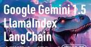
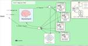
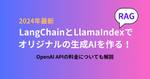
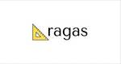
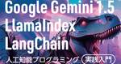

#LangChainタグ
https://note.com/hashtag/LangChain
「#LangChain」の人気タグ記事一覧です
フィード

Llama-3-ELYZA-JP-8Bを雑に触る
#LangChainタグ
Llama-3-ELYZA-JP-8Bについては下記参照。 elyza/Llama-3-ELYZA-JP-8B · Hugging FaceWe’re on a journey to advance and democratize artificial intehuggingface.co 続きをみる
3日前

LangGraph v0.1 と LangGraph Cloud の概要 1
1
#LangChainタグ
以下の記事が面白かったので、簡単にまとめました。 ・Announcing LangGraph v0.1 & LangGraph Cloud: Running agents at scale, reliably 続きをみる
4日前

Google Gemini 1.5、LlamaIndex、LangChain で始める人工知能プログラミング！実践入門ガイド
#LangChainタグ
Google Gemini 1.5／LlamaIndex／LangChain 人工知能プログラミング実践入門amzn.to 4,400円(2024年06月25日 11:45時点詳しくはこちら) Amazon.co.jpで購入する Google Gemini 1.5、LlamaIndex、LangChain で始める人工知能プログラミング！実践入門ガイド 続きをみる
7日前

LLMエージェント機能を簡単に構築できるLangGraphを試してみた。RAGチャットボット
#LangChainタグ
こんにちは！株式会社IZAI、エンジニアチームです。 今回は、LLM搭載サービスを開発するときに重要な、条件分岐やループ構造を簡単に構築できると話題の「LangGraph」を試してみます。 続きをみる
8日前

【2024年最新】RAGとOpenAI APIの料金と使い方 - LangChainとLlamaIndexを解説
#LangChainタグ
RAGをOpenAI APIで実現する方法を丁寧に解説。実際のコードや具体例を交えながら、LangChainとLlamaIndexの基本知識、導入手順、カスタマイズ、料金に関する詳細情報を提供し、GPT-4oモデルの使用例も紹介します。 当記事の前提：OpenAIのAPIキーを取得済み 取得の仕方がわからない方はこちらの記事でAPIキーの取得方法を説明しておりますので、是非ご活用ください！ 続きをみる
8日前
OpenAI 勉強日記(#15) マルチモーダルRAGのLangChain公式サンプルコードを読み解く
#LangChainタグ
LangChainの公式サンプルにはマルチモーダルRAGの良いサンプルがあり、今回はこれを読み解いてみた。 コード 続きをみる
9日前
AIらしさ＝「AIness」 新概念の提唱
#LangChainタグ
はじめまして！ 東大の院で「AI×噴火予測」の領域で研究をしている出野です。 研究以外では、LLM周りの受託開発を行いつつ、画像生成AI(Stable Diffusion)と3DCG技術を用いた、新たな表現方法の模索をしています。 続きをみる
9日前
OpenAI 勉強日記(#14) MultiVector Retrieverの公式サンプルコードを読み解く
#LangChainタグ
某月某日 LangChainの総復習をしていて、Retrieverのサンプルは結局動くように書き換えたらRetrieverを使わないものになってしまったのえ、Retrieverを単体で勉強したいと思って、MultiVectorRetrieverの公式ドキュメントのサンプルコードを呼んでみた。 続きをみる
11日前

Ragas で LangChainのRAG評価 を試す 2
#LangChainタグ
「Ragas」でLangChainのRAG評価を試したので、まとめました。 ・langchain v0.2.0 続きをみる
12日前
LangChain で RAGのハイブリッド検索 を試す 1
#LangChainタグ
「LangChain」でRAGのハイブリッド検索を試したので、まとめました。 ・langchain v0.2.0 続きをみる
13日前

『Google Gemini 1.5／LlamaIndex／LangChain 人工知能プログラミング実践入門』 がまもなく発売になります。
#LangChainタグ
『Google Gemini 1.5／LlamaIndex／LangChain 人工知能プログラミング実践入門』 がまもなく発売になります。 Google Gemini 1.5／LlamaIndex／LangChain 人工知能プログラミング実践入門www.amazon.co.jp 4,400円(2024年06月23日 16:55時点詳しくはこちら) Amazon.co.jpで購入する 続きをみる
13日前

Week of 6/10(2024) LangChain Release Notes
#LangChainタグ
LangChainが熱を帯びる6月へようこそ！今回は、LangSmithの組織的な強化、プレイグラウンドとオンライン評価者プロンプトの改善についてご紹介します。LLMが生成したUIも話題を呼んでいますし、Llama 3を使ったおいしいコードレシピもあります。 Andrew Ng (DeepLearning)による無料のLangGraphコースから、RAGやエージェントといったお気に入りのトピックに関するコミュニティの洞察まで、学習リソースも見逃せません。 続きをみる
16日前
【大人気シリーズフェア】完全入門シリーズ 電子書籍50％OFFセール実施中！
#LangChainタグ
「ステップアップするための良書を知りたい！」 そんな気持ちにお応えするために、インプレスブックスで販売している電子書籍を対象として50%オフで販売する大人気シリーズフェア。 続きをみる
18日前
LangChainブログ：マルチエージェントAIによる情報リサーチアプリを開発する事例
#LangChainタグ
元ネタ：https://blog.langchain.dev/how-to-build-the-ultimate-ai-automation-with-multi-agent-collaboration/ LangGraphを使用した自律的なリサーチアシスタントの構築方法：専門AIエージェントチームを活用して 続きをみる
21日前
Week of 5/27(2024) LangChain Release Notes
#LangChainタグ
[Week of 5/27] LangChain Release NotesLangChain v0.2 has versioned docs; LangSmith adds off-the-sheblog.langchain.dev LangChain v0.2 にはバージョン管理されたドキュメントがあり、LangSmith には既成の評価プロンプト、データセットの分割と繰り返しが追加されています。また、NVIDIA コンテストと NYC/SF ミートアップもチェックしてください。 続きをみる
23日前
LangChainを用いて大量ファイルをロードするVectorDBを作ってみた(12)
#LangChainタグ
はじめに 大量ファイルを単純にVectorDBに登録して、そのデータベースに対して生成AIに質問をしても、精度の高い回答を得られないことが分かってきました。 前回と前々回では、各XMLファイルの中にある「タイトル情報」を基に生成AIによる自動タグ付けを実施し、それをVectorDB (Chroma)の属性として登録することをしてみました。これで、VectorDBに対する準備ができました。 続きをみる
23日前
LangChainを用いて大量ファイルをロードするVectorDBを作ってみた(11)
#LangChainタグ
はじめに 前回は、各XMLファイルの中にある「タイトル情報」を基に「自動タグ付け」して、それをVectorDB (Chroma)の属性として登録することをしてみました。これで、VectorDBに対する準備ができました。 続きをみる
23日前
もはやRAG不用？ Google NotebookLMの利用方法とユースケース
#LangChainタグ
はじめに GoogleのNotebookLMは、AIを活用した次世代のノートツールです。ユーザーが自身のドキュメントから迅速に洞察を得るための強力な機能を提供します。このブログ記事では、NotebookLMの基本的な使い方と、いくつかの具体的なユースケースを紹介します。 続きをみる
24日前
Langchainを利用したリアルタイム配信解説実況及び参加型AI（踏み込み編）
#LangChainタグ
はじめに 前回、ライブ配信でAIVtuverの二名が、雑談しつつ参加者や配信者（中の人）の応答にも答えてくれるシステムを構築している記事を書きました！ 今回は、このAIを作ろうと思った経緯と技術を自然に学んていった経緯を書いておこうと思います。 続きをみる
25日前
LangChainを用いて大量ファイルをロードするVectorDBを作ってみた(10)
#LangChainタグ
はじめに 前回は、`chainlit`を`streamlit`に置き換えて、「XMLファイルの名称(10桁の数字)を入力するためのテキストボックス」と「プロンプト入力ボックス」の両方を表示させて入力できるようにしました。 今回で10回目の記事投稿なのですが、少しずつ進化しているような気がしています。 続きをみる
25日前
ChatGPT/LangChainによるチャットシステム構築[実践]入門のプログラムを試す
#LangChainタグ
はじめに 現在私は「LangChain」のプログラムに沼っており（若い人が使う言葉ですね）、今回は「ChatGPT/LangChainによるチャットシステム構築[実践]入門」を読んで、いろいろプログラミングをして楽しむことにしました。 今まで私は「製造業の生産管理システム」や「プログラム言語の構文解析システム」など、いろいろなプログラミングをしてきたのですが、生成AI分野のように完全な正解が無く、常にアップデートしていくスタンスのものは初めてで、とても興味深いです。 続きをみる
1ヶ月前
Nvidiaで独自の生成AIを開発を募るコンテストを行っています。パソコンで動くSLM（小規模言語モデル）を開発できます。
#LangChainタグ
私が登録したところ下記のメールが届きました。 私はLLMでなくてSLM（小規模言語モデル）に興味があります。 SLMは我々のパソコンにRTXGPUをつければ実行できます。 親切なチュートリアルがあるので パソコンのデータを自由に使い、ドラエモンのように応答してくれるシステムを開発が可能です。 以下メール 生成AIエージェント開発者コンテストにご登録いただきありがとうございます。 続きをみる
1ヶ月前